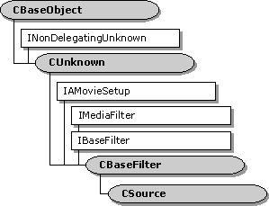

description: The CSource class is a base class for implementing source filters. A filter derived from CSource contains one or more output pins derived from the CSourceStream class. Each output pin creates a worker thread that pushes media samples downstream. ms.assetid: '25bd0334-4ad1-48ed-93f9-b36c13a280a3' title: CSource class (Source.h) ms.topic: reference ms.date: 4/26/2023 topic_type:
[The feature associated with this page, DirectShow, is a legacy feature. It has been superseded by MediaPlayer, IMFMediaEngine, and Audio/Video Capture in Media Foundation. Those features have been optimized for Windows 10 and Windows 11. Microsoft strongly recommends that new code use MediaPlayer, IMFMediaEngine and Audio/Video Capture in Media Foundation instead of DirectShow, when possible. Microsoft suggests that existing code that uses the legacy APIs be rewritten to use the new APIs if possible.]

The CSource class is a base class for implementing source filters. A filter derived from CSource contains one or more output pins derived from the CSourceStream class. Each output pin creates a worker thread that pushes media samples downstream.
[!Note]
The CSource class is designed to support the push model for data flow. This class is not recommended for creating file-reader filters. File readers should support the pull model, through the IAsyncReader interface. For more information, see Data Flow for Filter Developers.
| Protected Member Variables | Description |
|---|---|
| m_iPins | Number of pins on the filter. |
| m_paStreams | Array of pins. |
| m_cStateLock | Critical section object that protects the filter state. |
| Public Methods | Description |
| CSource | Constructor method. |
| ~CSource | Destructor method. |
| GetPinCount | Retrieves the number of pins on the filter. |
| GetPin | Retrieves a pin. |
| pStateLock | Retrieves a pointer to the filter's critical section object. |
| AddPin | Adds a new output pin to the filter. |
| RemovePin | Removes a specified pin from the filter. |
| FindPinNumber | Retrieves the number of a specified pin on the filter. |
| IBaseFilter Methods | Description |
| FindPin | Retrieves the pin with the specified identifier. |
To implement an output pin, do the following:
To implement the filter, do the following:
To synchronize the filter state among multiple threads, call the CSource::pStateLock method. This method returns a pointer to the filter-state critical section. Use the CAutoLock class to hold the critical section. From a pin, you can access pStateLock from the pin's CBasePin::m_pFilter member variable, as follows:
CAutoLock lock(m_pFilter->pStateLock());
| Requirement | Value |
|---|---|
| Header | Source.h (include Streams.h) |
| Library | Strmbase.lib (retail builds); Strmbasd.lib (debug builds) |